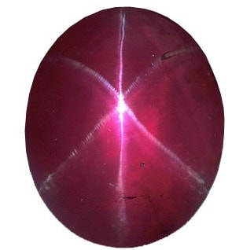

Ruby: The Fiery Gemstone of Passion and Power

Chemical Formula: Al₂O₃ (Aluminum Oxide)
Color: Red (Pinkish-Red to Deep Red)
Hardness: 9 on the Mohs scale
Crystal System: Trigonal
Localities: Myanmar, Thailand, Mozambique, Sri Lanka
Common Uses: Jewelry, Decorative Items, Carvings
Ruby is one of the most precious and sought-after gemstones in the world, celebrated for its vibrant red color and rich history. A variety of the mineral corundum (aluminum oxide), ruby gets its red color from trace amounts of chromium. This gemstone has been prized for thousands of years across various cultures and has come to symbolize love, passion, and power.
The name "ruby" comes from the Latin word "ruber," meaning red. Ruby is often referred to as the "king of gemstones" and is one of the four precious stones along with sapphire, emerald, and diamond. Its intense red hue, often associated with the color of blood, made it a symbol of vitality and protection in ancient times. Ruby is also the birthstone for July, symbolizing health, wisdom, and success.
Formation and Types of Ruby
Rubies form under extreme conditions of heat and pressure in metamorphic rocks such as marble and gneiss, as well as in igneous rocks like basalt. The presence of chromium gives ruby its characteristic red color, while the absence of iron allows for the formation of vivid red rubies, particularly those found in marble deposits.
There are several types of ruby, categorized by their origin and quality:
Burmese Ruby

Burmese rubies, particularly those from the Mogok region in Myanmar, are considered the finest in the world. They are known for their "pigeon's blood" color, a deep red with a hint of blue, and exceptional clarity.
Thai Ruby
Rubies from Thailand typically have a darker red color, often with brownish undertones due to the presence of iron. Thai rubies are known for their high clarity and are a popular choice for jewelry.
African Ruby
Rubies from Africa, particularly Mozambique and Tanzania, have recently gained popularity. They often display a vibrant red color with excellent clarity and are more affordable than Burmese rubies.
Star Ruby

Star rubies exhibit asterism, a star-like pattern on the stone's surface caused by light reflecting off needle-like inclusions of rutile. These rubies are highly prized for their unique appearance and are often cut as cabochons.
Structure and Properties of Ruby
Ruby belongs to the trigonal crystal system and is composed of aluminum oxide (Al₂O₃) with trace amounts of chromium. It is known for its exceptional hardness, vibrant red color, and brilliance.
- Hardness: Ruby has a hardness of 9 on the Mohs scale, making it one of the hardest gemstones, second only to diamond. This durability makes ruby an excellent choice for all types of jewelry, particularly rings and bracelets.
- Color: The color of ruby ranges from pinkish-red to deep red, with the most prized color being "pigeon's blood," a vivid red with a hint of blue. The intensity of the red color is influenced by the amount of chromium present in the crystal.
- Luster: Ruby exhibits a vitreous (glassy) luster when polished, giving it a bright, reflective surface. This luster enhances the stone's natural beauty and brilliance.
- Clarity: High-quality rubies are typically eye-clean, meaning they have no visible inclusions to the naked eye. However, most rubies contain some inclusions, which are considered acceptable as long as they do not significantly impact the stone's transparency or color.
Uses of Ruby
Ruby has been used for various purposes throughout history, from ornamental objects to symbolic and protective talismans:
Jewelry
Ruby is one of the most popular gemstones for jewelry, used in everything from rings and necklaces to earrings and bracelets. Its vibrant red color makes it a favorite for engagement rings and other statement pieces. Rubies are often set in gold or platinum to enhance their rich color.
Historical and Religious Artifacts
Rubies have been used in various historical and religious artifacts, particularly in royal jewelry and ceremonial objects. The gemstone has been a symbol of power and authority, often adorning crowns, scepters, and religious relics.
Symbolism and Metaphysics
Ruby is associated with love, passion, and protection. It is believed to bring vitality, courage, and emotional strength to its wearer. Rubies have also been used in various cultures as protective talismans to ward off evil and promote good fortune.
Collectibles and Investments
Due to its rarity and unique color, high-quality ruby is also collected as an investment. Burmese rubies, in particular, are highly sought after by collectors and often command premium prices at auctions.
History of Ruby
The history of ruby is rich and spans several cultures and time periods:
- Ancient Burma (Myanmar): Rubies have been mined in Myanmar for over 1,000 years, particularly in the Mogok region, known as the "Valley of Rubies." Burmese rubies were highly prized by royalty and were believed to protect warriors in battle.
- Ancient India: In ancient India, rubies were considered the most precious of all gemstones, known as "ratnaraj," meaning "king of precious stones." They were often used in religious ceremonies and were believed to bring peace and prosperity.
- Medieval Europe: During the Middle Ages, rubies were thought to bring good health and protect against bad luck. They were worn by royalty and nobility as symbols of wealth and power.
- Modern Times: Today, ruby remains one of the most coveted gemstones, particularly in fine jewelry. Advances in mining and cutting techniques have made high-quality rubies more accessible, allowing them to be featured in a variety of modern jewelry designs.
Unusual Varieties of Ruby
In addition to the well-known red rubies, there are some unusual and rare forms:
Star Ruby
Star rubies display asterism, a phenomenon where a six-rayed star appears on the surface of the stone when viewed under direct light. This effect is caused by the alignment of rutile inclusions within the ruby and is highly prized for its unique appearance.
Trapiche Ruby

Trapiche rubies are a rare variety that displays a star-like pattern with six spokes radiating from a central core. This pattern is caused by the presence of inclusions and is named after the spoked wheels used in sugar mills ("trapiche" in Spanish).
Color-Change Ruby
Some rubies exhibit a color-change effect, appearing red in natural light and purplish-red under incandescent light. This phenomenon is rare and adds to the stone's desirability.
Pink Sapphire

Rubies and sapphires are both varieties of corundum, with the primary difference being color. Stones that are too light to be considered red are classified as pink sapphires, which can also be highly valuable and sought after.
Enhancement of Ruby
To enhance their appearance and durability, rubies may undergo various treatments:
- Heat Treatment: Heat treatment is the most common enhancement for rubies, used to improve color and clarity. This treatment is stable and permanent, and it is widely accepted in the industry. Heat-treated rubies should be disclosed to buyers.
- Fracture Filling: Some rubies have fractures that are filled with lead glass or other materials to improve their clarity. This treatment enhances the stone's appearance but should be disclosed as filled rubies are less valuable than untreated stones.
- Dyeing: In some cases, lower-quality rubies are dyed to enhance their color. This treatment is less common and should be disclosed as dyed rubies are less valuable than natural or heat-treated stones.
- Diffusion Treatment: Diffusion treatment involves the use of high temperatures and chemicals to enhance the color of the ruby. This treatment is less common and should be disclosed as it only affects the surface of the stone and may wear off over time.
Famous Finds and Ruby
Rubies have been discovered in various parts of the world, with some famous finds being particularly notable:
The Sunrise Ruby
The Sunrise Ruby, weighing 25.59 carats, is one of the most valuable rubies ever sold at auction. It is a Burmese ruby with a "pigeon's blood" color and exceptional clarity, setting a world record price for any colored gemstone.
The Carmen Lúcia Ruby

The Carmen Lúcia Ruby, a 23.1-carat Burmese ruby, is one of the finest rubies in the world. It is known for its vivid red color and is on display at the Smithsonian Institution in Washington, D.C.
The Rosser Reeves Star Ruby
Weighing 138.7 carats, the Rosser Reeves Star Ruby is one of the largest and finest star rubies in existence. It is known for its strong asterism and deep red color and is also housed at the Smithsonian Institution.
The Liberty Bell Ruby
The Liberty Bell Ruby, originally weighing over 8,000 carats, was the largest mined ruby in the world. It was carved into a replica of the Liberty Bell and set with 50 diamonds, but it was stolen in 2011 and remains missing.
Sourcing Locations and Mining
Rubies are sourced from several key locations around the world, each known for producing stones with distinct characteristics:
- Myanmar (Burma): Myanmar is known for producing the finest rubies, particularly from the Mogok region. Burmese rubies are highly prized for their "pigeon's blood" color and exceptional clarity.
- Thailand: Thailand is a significant source of rubies, particularly from the Chanthaburi and Trat regions. Thai rubies are known for their darker red color, often with brownish undertones.
- Mozambique: Mozambique has become an important source of rubies in recent years, producing stones with vibrant red color and excellent clarity. Mozambican rubies are more affordable than Burmese rubies and are popular in the global market.
- Sri Lanka: Sri Lanka produces rubies with a lighter pinkish-red color, often referred to as "Ceylon rubies." These stones are valued for their clarity and are often used in fine jewelry.
Where to Find Ruby in the United States
The United States, particularly North Carolina and Montana, is a major source of ruby. Use our gemstone and crystals map to locate different ruby locations across the United States.
Exploration and Mining
The exploration and mining of rubies involve locating suitable deposits and extracting the stone with care:
Exploration
Geological surveys and sampling are conducted to locate ruby deposits, typically in areas with metamorphic rocks such as marble and gneiss. Traditional prospecting methods, such as surface exploration and test drilling, are used to identify potential mining sites.
Mining Methods
Rubies are typically mined using open-pit or underground mining techniques, depending on the depth of the deposit. In regions like Myanmar and Thailand, rubies are often extracted by hand to prevent damage to the stones.
Processing
After extraction, rubies are cleaned, sorted, and graded based on their color, clarity, and overall quality. The stones are then cut and polished for use in jewelry or as collector specimens.
Identifying Authentic Ruby
Identifying an authentic ruby involves examining several key characteristics:
- Color: Authentic rubies have a red color that ranges from pinkish-red to deep red. The most valuable rubies exhibit a "pigeon's blood" color, a vivid red with a hint of blue.
- Clarity: High-quality rubies are typically eye-clean, meaning they have no visible inclusions to the naked eye. However, most rubies contain some inclusions, which are considered acceptable as long as they do not significantly impact the stone's transparency or color.
- Testing Methods: Common tests for authenticity include checking the stone's refractive index (1.76 to 1.77) and examining it under a loupe to identify any characteristic inclusions. Rubies should have a natural, consistent color and luster.
- Certification: High-quality rubies, particularly rare and valuable specimens, may come with a certificate of authenticity from a reputable gemological laboratory. This certification provides detailed information about the stone's characteristics and any treatments.
Buy & Sell Authentic Ruby Here
Cutting and Polishing Ruby
Cutting and polishing ruby is a skilled process that enhances the stone's natural beauty:
- The Cutting Process: Rubies are typically cut into faceted shapes, such as round, oval, or cushion, to maximize their brilliance and color. The cutter must carefully plan the cut to avoid inclusions and enhance the stone's natural sparkle.
- Polishing: After cutting, rubies are polished to a high gloss using fine abrasives. The polishing process enhances the stone's luster and clarity, giving it a smooth, reflective surface.
- Carving: Due to its hardness, ruby is also used for carving intricate designs, such as figurines, small sculptures, and ornamental objects. Skilled artisans can create detailed carvings that highlight the stone's unique color and clarity.
Ruby Market and Trade
The market for ruby is influenced by several factors, including quality, origin, and demand:
- Value Determinants: The value of ruby is determined by its color, clarity, and overall quality. Stones with a vivid red color and high clarity are the most valuable. Burmese rubies are particularly prized for their "pigeon's blood" color.
- Global Trade: Myanmar, Mozambique, and Thailand are the leading producers of rubies. The global trade of ruby is driven by demand from jewelers, collectors, and enthusiasts who value the stone for its unique beauty and historical significance.
- Market Trends: Ruby continues to be popular in jewelry and decorative arts. The demand for ethically sourced rubies is increasing, particularly as consumers become more aware of the conditions in which the gemstone is mined. Burmese and Mozambican rubies are especially sought after in the global market.
Buy & Sell Authentic Ruby Here
Caring for Ruby
Ruby requires proper care to maintain its beauty and prevent damage:
- Cleaning: Clean ruby with warm, soapy water and a soft cloth. Avoid ultrasonic cleaners and harsh chemicals, as these can damage the stone's surface or cause it to crack. Ruby should not be exposed to extreme temperatures or acids.
- Storage: Store ruby separately from other gemstones to prevent scratches. Keep it in a soft pouch or lined jewelry box to protect it from dust and abrasion.
- Handling: Ruby is relatively hard and durable, but it can still be prone to chipping and cracking. Handle it with care, especially when wearing or cleaning jewelry. Avoid exposing ruby to direct sunlight for prolonged periods, as this can cause the color to fade.
- Repolishing: Over time, ruby may lose its luster due to wear and tear. Professional repolishing can restore the stone's shine and enhance its appearance.
Metaphysical Properties of Ruby
Ruby has been attributed with various metaphysical properties throughout history:
- Vitality and Energy: Ruby is often associated with vitality and energy. It is believed to boost the wearer's physical and mental energy, promoting motivation and a zest for life.
- Love and Passion: Ruby is considered a stone of love and passion. It is believed to enhance romantic relationships, attract new love, and promote feelings of passion and desire.
- Protection and Courage: Ruby is thought to provide protection against negative energies and to give the wearer courage and strength. It is often used as a protective talisman in various cultures.
- Root Chakra: Ruby is associated with the root chakra, making it a popular choice for those seeking to enhance their sense of security, stability, and grounding. It is believed to balance the root chakra and promote a strong connection to the earth.